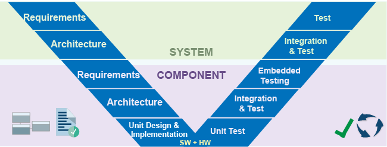

Verification, Validation, and Test
Systematic verification increases confidence that your design accurately implements your requirements and that your tests fully validate your requirements. Early in development, you can create a high-level system model and link to system requirements. The system model can serve as an executable specification and basis for more detailed models.
Using these MathWorks® products to complement Model-Based Design, you can:
Trace requirements to architecture, design, tests, and code.
Confirm that your design meets requirements and is free of critical run-time errors.
Check compliance and measure quality of models and code.
Identify dead logic and generate test cases to resolve missing coverage.
Produce reports and artifacts, and verify that your design meets compliance standards.
You can also guide MATLAB® software development by:
Authoring and linking requirements to tests and code.
Running dynamic tests to monitor for regressions in code functionality.
Identifying untested code paths using industry-standard code coverage metrics.

Products for Verification, Validation, and Test
Topics
Specify and Validate Requirements
- Author Requirements in MATLAB or Simulink (Requirements Toolbox)
Create requirements and define the requirement hierarchy with MATLAB or Simulink®. - Import Requirements from Third-Party Applications (Requirements Toolbox)
Import requirements from external documents and requirements management tools. - Create Spreadsheets in the Safety Analysis Manager (Simulink Fault Analyzer)
Create a spreadsheet in the Safety Analysis Manager. - Use a Requirements Table Block to Create Formal Requirements (Requirements Toolbox)
Assess formal requirements by using Requirements Table blocks. (Since R2022a) - Analyze Requirements Table Blocks for Requirements Specification Problems (Requirements Toolbox)
Use Simulink Design Verifier™ to validate Requirements Table blocks. (Since R2022a)
Link Requirements to Designs and Analyses
- Test Model Against Requirements and Report Results (Requirements Toolbox)
Associate your model with detailed requirements, demonstrate traceability, test against requirements. - Link Test Cases to Requirements (Requirements Toolbox)
Associate Simulink Test™ test cases with requirements. - Link Safety Analysis Manager Spreadsheet Cells and Rows to Linkable Items (Simulink Fault Analyzer)
Link Safety Analysis Manager cells with Requirements Toolbox™ software. - Track Requirement Links with a Traceability Matrix (Requirements Toolbox)
Track and manage links and change issues by using requirements traceability matrices. - Validate Requirements by Analyzing Model Properties (Requirements Toolbox)
Validate requirements that are modeled as properties for a control system. - Link MATLAB Code to Requirements (Requirements Toolbox)
Create and manage links to MATLAB code and plain-text external code, such as C code.
Identify and Eliminate Design Defects
- Analyze Models for Design Errors (Simulink Design Verifier)
Run a Design Error Detection Analysis and interpret the results. - Analyze Models for Standards Compliance and Design Errors (Simulink Check)
Detect and resolve design errors, check against standards, analyze functional dependencies, and prove properties.
Perform Requirements-Based Testing
- Requirements-Based Testing for Model Development (Simulink Test)
Test an autopilot system against requirements. - Verify Requirements in Projects with MATLAB Tests (MATLAB Test)
Verify requirements in projects by running linked MATLAB tests. - Use Specification Models for Requirements-Based Testing (Simulink Design Verifier)
Follow a systematic approach to verify your design model against requirements. (Since R2022b) - Write and Run Tests that Inject Faults by Using the Simulink Test Manager (Simulink Fault Analyzer)
Run tests that inject faults by creating fault sets. (Since R2024a) - Perform Functional Testing and Analyze Test Coverage (Simulink Coverage)
Analyze functional dependencies, test model components in isolation, create suites of test cases, test models, and code to achieve coverage. - Fix Requirements-Based Testing Issues (Simulink Check)
Fix model testing quality issues by using the Model Testing Dashboard. - Assess Requirements-Based Testing for ISO 26262 (Simulink Check)
Use the Model Testing Dashboard to analyze the completeness and quality of requirements-based testing activities in accordance with the ISO 26262 standard. - Use Process Advisor to Streamline Requirements-Based Testing of Models and Generated Code (Simulink Test)
Use Process Advisor to automate assessment of requirements-based tests at the model and code level and interactively resolve test issues and gaps in test coverage. project.
Perform Code-Based Testing and Verification
- Analyze Code and Perform Software-in-the-Loop Testing (Simulink Check)
Detect code errors, generate code metrics, test code and model equivalence, test code against requirements. - Generate C/C++ Code and Test for Equivalence (MATLAB Test)
Generate C/C++ code from MATLAB code and verify that the execution of the generated code and MATLAB code are equivalent. - Integrate Polyspace with MATLAB and Simulink (Polyspace Bug Finder)
Integrate Polyspace® with MATLAB and Simulink to identify potential bugs, run-time errors, and coding standard violations in your model and code. - Run Polyspace Analysis on Code Generated with Embedded Coder (Polyspace Bug Finder)
Check code generated with Embedded Coder® for bugs, run-time errors or coding rule violations.
Featured Examples

Run a Test Suite and Resolve Missing Model Coverage
Run a test suite, collect coverage, and generate test cases to satisfy missing model coverage.

Manage Requirements and Advanced Model Checks
The how to identify potential gaps in model compliance by identifying missing requirements links, running standard and custom model checks, and performing design error detection analysis.

Explore Status and Quality of Testing Activities Using Model Testing Dashboard
Evaluate the status and quality of model testing in your project.

Verify Fault Detection Logic in Aircraft Elevator Control System
Use conditionals to verify that fault mitigation logic deploys and verify controller behavior in an FMEA.

Evaluate Fault Combinations on a Fault-Tolerant Fuel System
Simulate faults on a fault tolerant fuel system and analyze their effects in an FMEA.
Videos
Managing Requirements and Advanced Model Checks Workflow Example
This example shows you how to get started with requirements management and
advanced model checks using Simulink verification and validation tools.
Requirements Based Testing Workflow Example
This example shows you how to get started with requirements-based testing
using Simulink verification and validation tools.
What Is the High-Integrity Verification Workflow?
The goals of systematic verification and validation are to find defects
sooner and shorten the time to market while maintaining high standards of
quality.

Introducing Simulink
Fault Analyzer
Learn the fundamental concepts of Simulink
Fault Analyzer™.